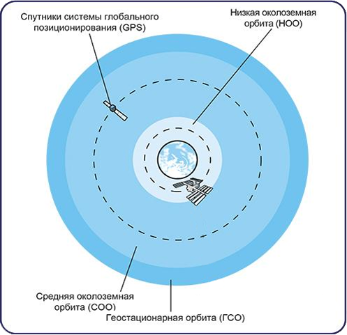
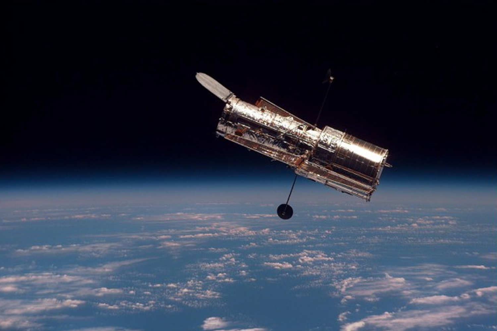

Типы космическх аппаратов
На земле все спутники выглядят похоже — блестящие коробки или цилиндры, украшенные крыльями из солнечных панелей. Но в космосе эти неуклюжие машины ведут себя совершенно по-разному в зависимости от траектории полета, высоты и ориентации. В результате, классификация спутников превращается в сложное дело. Один из подходов — определение орбиты аппарата относительно планеты (обычно Земли). Напомним, что существует две основных орбиты: круговая и эллиптическая. Некоторые спутники начинают по эллипсу, а потом выходят на круговую орбиту. Другие движутся по эллиптическому пути, известному как орбита «Молния». Эти объекты, как правило, кружат с севера на юг через полюсы Земли и завершают полный облет за 12 часов.Полярно-орбитальные спутники также проходят через полюсы с каждым оборотом, хотя их орбиты менее эллиптические. Полярные орбиты остаются фиксированными в космосе, в то время как вращается Земля. В результате, большая часть Земли проходит под спутником на полярной орбите. Поскольку полярные орбиты дают прекрасный охват планеты, они используются для картографирования и фотографии. Синоптики также полагаются на глобальную сеть полярных спутников, которые облетают наш шар за 12 часов.
Можно также классифицировать спутники по их высоте над земной поверхностью. Исходя из этой схемы, есть три категории:

×

Виды орбит
- Низкая околоземная орбита (НОО) — НОО-спутники занимают область пространства от 180 до 2000 километров над Землей. Спутники, которые движутся близко к поверхности Земли, идеально подходят для проведения наблюдений, в военных целях и для сбора информации о погоде.
- Средняя околоземная орбита (СОО) — эти спутники летают от 2000 до 36 000 км над Землей. На этой высоте хорошо работают навигационные спутники GPS. Примерная орбитальная скорость — 13 900 км/ч.
- Геостационарная (геосинхронная) орбита — геостационарные спутники двигаются вокруг Земли на высоте, превышающей 36 000 км и на той же скорости вращения, что и планета.
Поэтому спутники на этой орбите всегда позиционируются к одному и тому же месту на Земле. Многие геостационарные спутники летают по экватору, что породило множество «пробок» в этом регионе космоса. Несколько сотен телевизионных, коммуникационных и погодных спутников используют геостационарную орбиту.
И наконец, можно подумать о спутниках в том смысле, где они «ищут». Большинство объектов, отправленных в космос за последние несколько десятилетий, смотрят на Землю. У этих спутников есть камеры и оборудование, которое способно видеть наш мир в разных длинах волн света, что позволяет насладиться захватывающим зрелищем в ультрафиолетовых и инфракрасных тонах нашей планеты. Меньше спутников обращают свой взгляд к пространству, где наблюдают за звездами, планетами и галактиками, а также сканируют объекты вроде астероидов и комет, которые могут столкнуться с Землей.
Также различают следующие типы спутников:

×

Функции искуственных спутников
Сегодня искусственные спутники выводятся на орбиту Земли или других планет. Сейчас вокруг земного шара летает их огромное количество. Различные по форме, весу, они выполняют самую разнообразную работу.- Спутники-связисты помогают смотреть телепередачи, вести телефонные разговоры, связывают между собой компьютеры; это делается путем ретрансляции (то есть приема и дальнейшей передачи) радиосигналов между точками на земной поверхности, между которыми нет прямой видимости
- Спутники-навигаторы помогают кораблям совершать плавания. Спутниковая система навигации GPS помогает при любой погоде определять местоположение объектов. С помощью GPS-навигаторов, встроенных в мобильные телефоны, КПК и автомобильные компьютеры любой человек может определить свое местонахождение и прокладывать маршруты с учетом дорожных знаков, искать на карте нужные ему дома и улицы и т. д.
- Метеоспутники ведут наблюдение за изменением погоды и исследуют климат Земли. По их сообщениям метеорологи составляют прогноз погоды.
- Спутники-разведчики (спутники-шпионы) умеют делать фотографии объектов на Земле высокой четкости, прослушивать системы связи, осуществлять слежку.
- Научно-исследовательские спутники помогают в проведении научных исследований; с их помощью изучают магнитное поле и радиационную обстановку на нашей планете, они используются в геодезии, картографии и тектонике.
- На биоспутниках проводятся биологические эксперименты, с помощью решается большинство технических проблем космонавтики (например, на спутниках такого типа отрабатывались различные способы защиты космонавтов от излучений, опасных для здоровья и жизни).
- Астрономические спутники исследуют планеты Солнечной системы и их спутники, а также галактики и другие космические объекты.
Антропогенные спутники на орбите Земли сильно влияют на нашу современную жизнь, хотя многие не осознают этого. В какой-то степени спутники помогают нам дышать свободно, обеспечивая нас данными, своевременной помощью, возможностями. Спутники делают жизнь безопаснее, обеспечивают массу современных удобств, а также помогают транслировать развлечения и изучать Землю и космос.